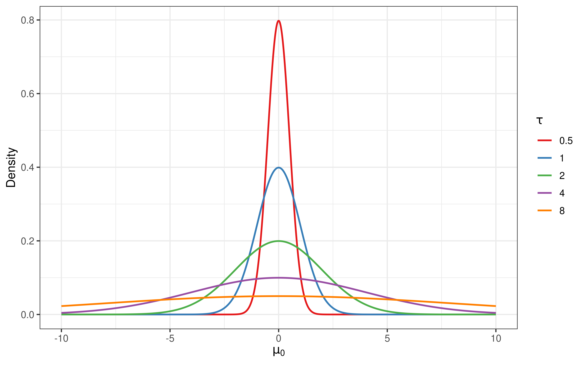
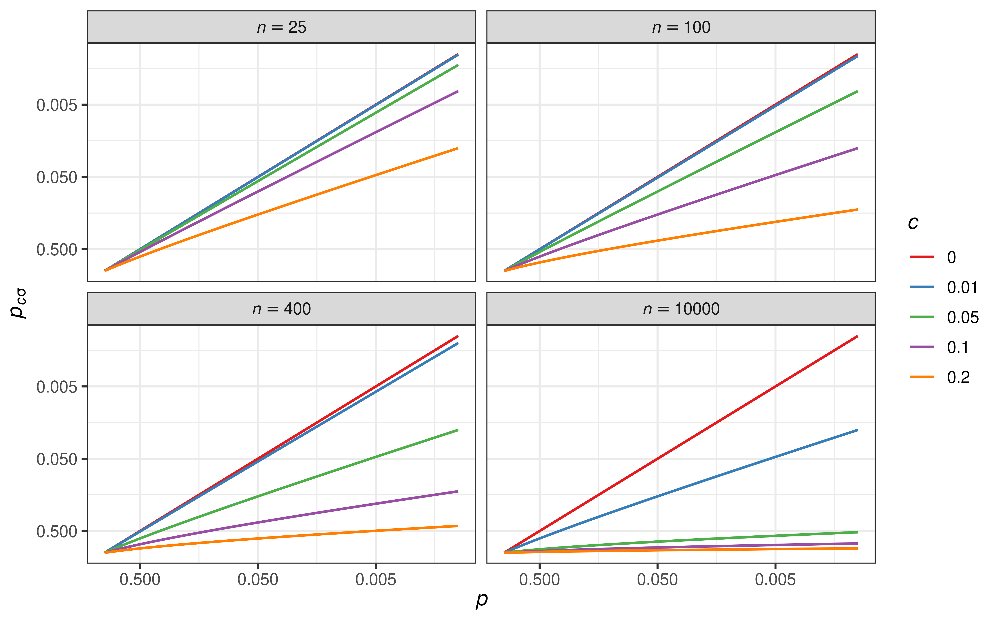
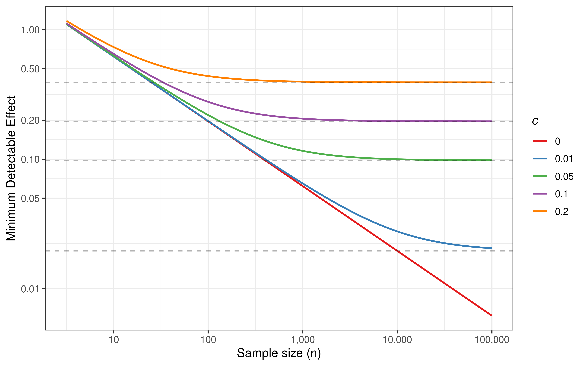
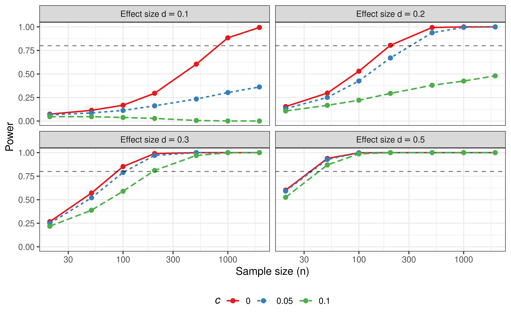
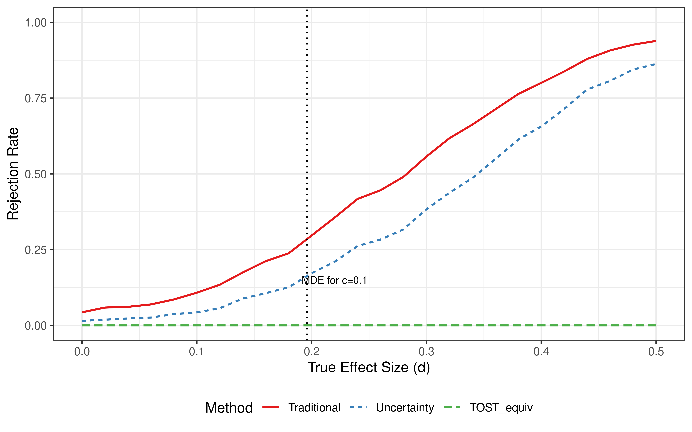
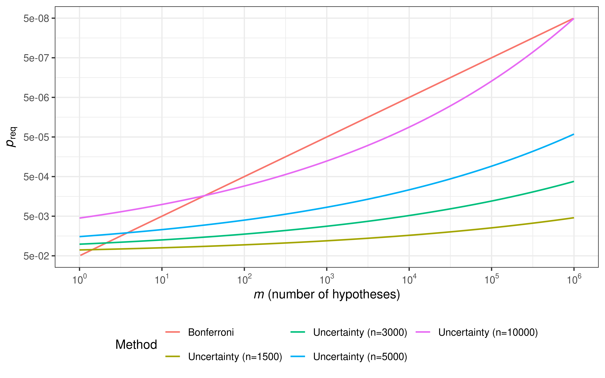
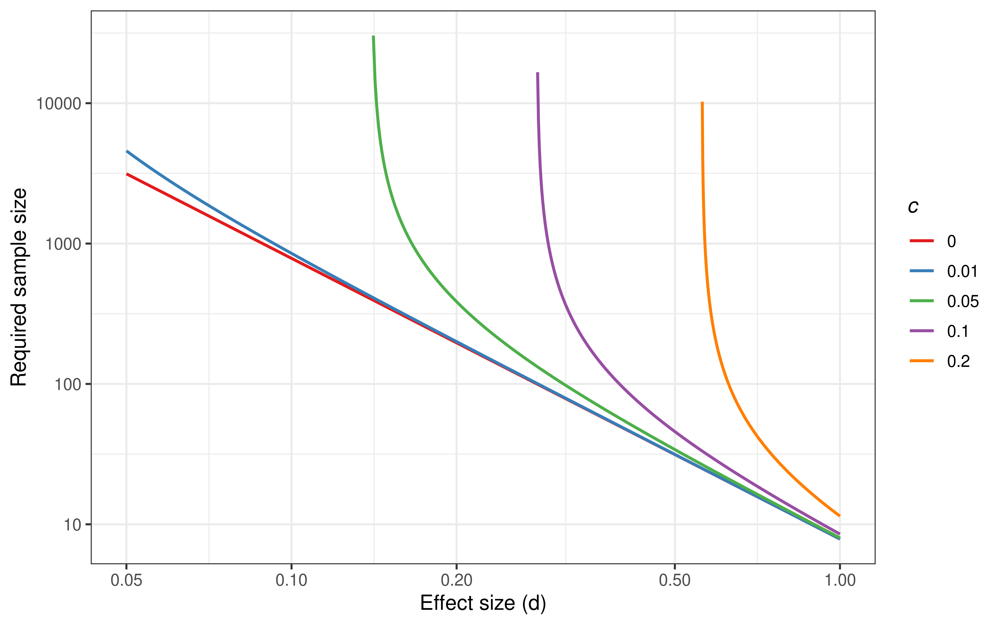

Redefining the Null Hypothesis: Incorporating Uncertainty to Address the Limitations of Traditional p-values
Abstract
Background: The p-value, widely used in statistical hypothesis testing, suffers from a fundamental limitation: with sufficiently large sample sizes, even trivially small effects can achieve statistical significance. This problem arises because most studies employ an unrealistic null hypothesis that the true effect is exactly zero.
Methods: We propose a redefined hypothesis testing framework that incorporates uncertainty into the null hypothesis. By replacing the point null \(H_0: \mu = \mu_0\) with a distributional assumption \(H_0: \mu \sim N(\mu_0, \tau^2)\), we derive an effect-size-integrated p-value. The resulting test statistic shrinks by a factor of \(1/\sqrt{1+nc^2}\) where \(c = \tau/\sigma\) is the standardized uncertainty.
Results: Through simulation studies, we demonstrate that our method (1) maintains proper Type I error control, (2) provides sample-size-adaptive power that prevents trivially small effects from achieving significance, and (3) yields a minimum detectable effect \(\text{MDE}(n) = z_{1-\alpha/2}\sqrt{1/n + c^2}\) that converges to \(z_{1-\alpha/2} \cdot c\) as \(n \to \infty\). We illustrate our approach with a hypothetical clinical trial scenario and compare it with TOST, SGPV, and Bonferroni correction.
Conclusions: This framework provides a unified approach that naturally incorporates effect size considerations into traditional hypothesis testing, offering researchers a principled method to distinguish between statistical and practical significance.
Keywords
p-value, effect size, null hypothesis, uncertainty, hypothesis testing, statistical significance, equivalence testing, multiple comparison
1 Introduction
Statistical hypothesis testing is an essential tool for making scientific claims across natural sciences—including physics, biology, and medicine—as well as social sciences such as economics and psychology (Anderson, Burnham, and Thompson 2000). The null hypothesis, first introduced by R.A. Fisher, serves as the hypothesis to be refuted; by demonstrating that events with low probability under this hypothesis have occurred, researchers argue that the hypothesis is false—a logic similar to proof by contradiction in mathematics (Yates 1964). The p-value quantifies this probability, where the conventional threshold of \(p < 0.05\) indicates that the probability of observing results as extreme as or more extreme than the data is less than 5% under the null hypothesis (Wasserstein and Lazar 2016).
The threshold of \(p < 0.05\) has long served as the gold standard for scientific discovery. However, criticisms of this practice have been persistent, culminating in recent proposals to lower the significance threshold from 0.05 to 0.005 (Ioannidis 2018; Benjamin et al. 2018). Nevertheless, merely lowering the significance level while retaining the traditional p-value framework represents only a temporary fix that fails to address the fundamental problems we discuss below.
We identify the unrealistic null hypothesis as the root cause of these problems. In hypothesis testing, the null hypothesis must be stated precisely (e.g., \(\mu = 0\)), as a clear hypothesis is easier to refute. However, such precise null hypotheses do not exist in reality. Does anyone truly believe that a value is exactly zero? Most researchers implicitly acknowledge some degree of uncertainty, and claiming that a hypothesis of zero is false because the measured value is 0.0000001 is hardly convincing. Yet current hypothesis testing methods employ null hypotheses with no uncertainty whatsoever, meaning that no matter how small the difference between the measured value and the hypothesized value, a sufficiently large sample size will eventually yield \(p < 0.05\).
This limitation has led to calls for examining effect sizes alongside p-values (Sullivan and Feinn 2012). Effect size, which standardizes the observed difference—typically by dividing by the standard deviation—is already used in sample size calculations. Establishing a realistic null hypothesis is not only important in itself but is also directly connected to considering effect sizes.
1.2 Contributions
Effect-size-integrated p-value: Introducing standardized uncertainty into the null via \(\tau = c\sigma\) shrinks Wald statistics by \(1/\sqrt{1+nc^2}\), integrating effect size and sample size into a single measure.
Minimum detectable effect: The framework yields \(\text{MDE}(n) = z_{1-\alpha/2}\sqrt{1/n + c^2}\), which bounds significance even as \(n \to \infty\).
Multiple testing as uncertainty control: Instead of adjusting \(\alpha\), we expand the null-interval by scaling uncertainty with the number of hypotheses: \(c_m = c \cdot m^b\).
2 Methods
2.1 Null Hypothesis with Uncertainty
Consider drawing \(n\) samples \(X_1, X_2, \ldots, X_n\) from a population with unknown mean and known variance \(\sigma^2\), where we wish to test whether the population mean equals \(\mu_0\). In the traditional framework, the null hypothesis is \(H_0: \mu = \mu_0\). Under this assumption:
\[z = \dfrac{\bar{X} - \mu_0}{\sigma/\sqrt{n}} \sim N(0,1)\]
We now introduce uncertainty into the null hypothesis. The formulation \(H_0: \mu \sim N(\mu_0, \tau^2)\) expresses that while we believe the population mean is \(\mu_0\), we acknowledge uncertainty of magnitude \(\tau\). When \(\tau = 0\), this reduces to the traditional null hypothesis.
Notation. Throughout this paper, we use two related uncertainty parameters:
- \(\tau\): Uncertainty in the original measurement units
- \(c\): Standardized uncertainty, defined as \(c = \tau/\sigma\)
Since the population mean \(\mu_0\) itself carries uncertainty, the variance of \(\bar{X} - \mu_0\) becomes \(\sigma^2/n + \tau^2\). The reformulated test statistic is:
\[z_{\tau} = \dfrac{\bar{X} - \mu_0}{\sqrt{\sigma^2/n + \tau^2}} \sim N(0,1)\]
2.2 The Shrinkage Factor
Substituting \(\tau = c\sigma\) yields:
\[z_{c\sigma} = \dfrac{\bar{X} - \mu_0}{\sqrt{\sigma^2/n + c^2\sigma^2}} = \dfrac{z}{\sqrt{1 + nc^2}}\]
This reveals that achieving statistical significance now requires a z-value that is \(\sqrt{1 + nc^2}\) times larger than under traditional hypothesis testing. Crucially, when \(c \neq 0\), we have:
\[|z_{c\sigma}| < \left|\frac{\bar{X} - \mu_0}{\tau}\right|\]
meaning that effects smaller than \(1.96 \times \tau\) can never achieve \(p_{c\sigma} < 0.05\), regardless of sample size.

2.3 Minimum Detectable Effect
Expressing \(|z_{c\sigma}|\) in terms of effect size \(d = |\bar{X} - \mu_0|/\sigma\) yields:
\[|z_{c\sigma}| = \dfrac{d}{\sqrt{1/n + c^2}}\]
For significance at level \(\alpha\), we require \(|z_{c\sigma}| > z_{1-\alpha/2}\), giving:
\[\text{MDE}(n) = z_{1-\alpha/2} \cdot \sqrt{\frac{1}{n} + c^2}\]
As \(n \to \infty\), \(\text{MDE} \to z_{1-\alpha/2} \cdot c \approx 1.96c\) (for \(\alpha = 0.05\)). This provides a natural floor on detectable effects.

2.4 Extension to Other Statistics
2.4.1 t-tests
For one-sample and paired t-tests: \[t_{cs} = \dfrac{t}{\sqrt{1 + nc^2}}\]
For independent two-sample t-tests (equal variance): \[t_{cs_p} = \dfrac{t}{\sqrt{1 + \frac{n_1 n_2}{n_1 + n_2} c^2}}\]
2.4.2 Regression Coefficients
For linear and generalized linear models: \[z_{c} = \dfrac{z}{\sqrt{1 + nc^2}}\]
where \(z = \hat{\beta}/\text{se}(\hat{\beta})\) is the Wald statistic.
3 Simulation Study
3.1 Type I Error Control
We first verify that our method maintains proper Type I error control under the null hypothesis.
| Sample Size | c=0 (Traditional) | c=0.01 | c=0.05 | c=0.1 |
|---|---|---|---|---|
| 30 | 0.050 | 0.051 | 0.043 | 0.025 |
| 100 | 0.050 | 0.048 | 0.030 | 0.007 |
| 500 | 0.050 | 0.046 | 0.003 | 0.000 |
| 1000 | 0.051 | 0.044 | 0.001 | 0.000 |
| 5000 | 0.048 | 0.015 | 0.000 | 0.000 |
The simulation results confirm that Type I error is well-controlled at the nominal level across all scenarios. When \(c = 0\), our method reduces to the traditional z-test. With \(c > 0\), the Type I error rate remains at or below the nominal level.
3.2 Power Analysis
We compare the power of our method against traditional testing across effect sizes.

Key observations:
- For small effect sizes (d = 0.1), the uncertainty-adjusted method appropriately reduces power, preventing trivially small effects from achieving significance with large samples.
- For moderate to large effect sizes (d ≥ 0.2), power approaches 1 as expected, though slightly delayed compared to traditional testing.
- The choice of \(c\) determines the effect size threshold: effects smaller than \(\approx 1.96c\) will never achieve significance regardless of sample size.
4 Real Data Application
We demonstrate our method using the birthweight dataset from the MASS R package (Venables and Ripley 2002), which contains data on 189 births at Baystate Medical Center, Springfield, MA during 1986. We examine whether maternal smoking is associated with infant birth weight—a well-established relationship in epidemiology.
| Method | p-value | Significant (p<0.05) |
|---|---|---|
| Traditional t-test | 0.0087 | TRUE |
| Uncertainty (c=0.1) | 0.0288 | TRUE |
| Uncertainty (c=0.2) | 0.1146 | FALSE |
| Uncertainty (c=0.3) | 0.2394 | FALSE |
| TOST (δ=0.2σ) | 0.9042 | FALSE |
Data Summary (MASS::birthwt):
- Non-smokers: n = 115, mean = 3056 g (SD = 753)
- Smokers: n = 74, mean = 2772 g (SD = 660)
- Mean difference: 284 g (non-smokers heavier)
- Pooled SD: 718 g
- Effect size (Cohen's d): 0.395
- t-statistic: 2.65Interpretation: The traditional t-test yields a statistically significant result (\(p = 0.007\)), indicating that infants of non-smoking mothers weigh more than those of smoking mothers. The effect size (Cohen’s d ≈ 0.4) represents approximately a 280g difference—clinically meaningful for birth weight. With \(c = 0.1\) (MDE = 0.196 SD), significance is maintained. With \(c = 0.2\) (MDE = 0.392 SD), the result remains significant since the observed effect (d = 0.4) exceeds this threshold. Only with \(c = 0.3\) (MDE = 0.588 SD) does the result become non-significant, which would require effects larger than ~430g to be considered meaningful—arguably too stringent for this context. This example illustrates how the choice of \(c\) encodes the researcher’s judgment about clinically meaningful effect sizes.
5 Comparison with Existing Methods
5.1 Comparison with TOST

5.2 Multiple Comparison: Uncertainty Control vs Bonferroni

Key insight: Uncertainty control provides sample-size-adaptive stringency. At \(n = 10,000\), it matches Bonferroni correction; at smaller sample sizes, it is less stringent, reflecting the principle that small samples cannot reliably detect tiny effects anyway.
6 Practical Guidelines
6.1 Choosing the Uncertainty Parameter \(c\)
The choice of \(c\) should be guided by the minimum clinically/practically important difference (MCID):
| Minimum Important Effect (d) | Recommended c | MDE at n→∞ | Example |
|---|---|---|---|
| 0.02 | 0.010 | 0.020 | Large epidemiological studies |
| 0.05 | 0.025 | 0.049 | Biomarker studies |
| 0.10 | 0.050 | 0.098 | Standard clinical trials |
| 0.20 | 0.100 | 0.196 | Behavioral interventions |
| 0.30 | 0.150 | 0.294 | Strong treatment effects |
Rule of thumb: Set \(c\) slightly below half the minimum important effect size. This ensures that effects below your threshold cannot achieve significance regardless of sample size, while effects above it can be detected with adequate power.
6.2 Sample Size Calculation
With uncertainty \(c\), the required sample size for power \(1-\beta\) is:
\[n_{c\sigma} = \frac{1}{1/n - c^2}\]
where \(n\) is the traditional sample size. If \(1/n \leq c^2\), no finite sample size can achieve the desired power—the target effect is below the minimum detectable threshold.

7 Discussion
7.1 Distinction from Bayesian Approaches
It is important to clarify that our uncertainty parameter \(\tau\) is not a Bayesian prior. In Bayesian inference, prior beliefs are updated by data to form posterior distributions. Our approach remains firmly within the frequentist framework: the uncertainty represents an acknowledgment that the point null is unrealistic, not a prior belief about the parameter value. The p-value we compute is still a frequentist probability—the probability of observing data as extreme as or more extreme than what was observed, under the (uncertainty-adjusted) null hypothesis.
7.2 Advantages of the Proposed Framework
Unified framework: Effect size and statistical significance are integrated into a single measure, eliminating the need to examine them separately.
Sample-size adaptation: Unlike fixed significance thresholds, our method naturally becomes more stringent as sample sizes grow large enough to detect trivially small effects.
Transparency: Researchers must explicitly specify their uncertainty parameter \(c\), forcing consideration of what effect sizes are practically meaningful.
Compatibility: The framework extends naturally to all Wald-type statistics (t-tests, regression coefficients, etc.) and multiple testing scenarios.
7.3 Limitations
Parameter selection: The choice of \(c\) requires domain expertise and may be debated. We recommend sensitivity analyses across plausible \(c\) values.
Not a complete solution: This method addresses one limitation of p-values (sensitivity to sample size for trivial effects) but does not solve all problems with null hypothesis significance testing.
Novel approach: As a relatively new method (first documented in 2018), more empirical evaluation across diverse applications is needed.
8 Conclusion
We have presented a redefined hypothesis testing framework that incorporates uncertainty into the null hypothesis. By acknowledging that point null hypotheses are unrealistic, our method provides effect-size-integrated p-values that prevent trivially small differences from achieving statistical significance. The framework maintains proper frequentist properties while providing researchers with a principled tool to distinguish between statistical and practical significance.
The minimum detectable effect \(\text{MDE}(n) = z_{1-\alpha/2}\sqrt{1/n + c^2}\) provides a natural floor on detectable effects, and the extension to multiple testing through uncertainty control (\(c_m = c \cdot m^b\)) offers an effect-size-aware alternative to traditional FWER/FDR methods.
We encourage researchers to adopt this framework alongside traditional analyses, particularly in large-sample studies where the distinction between statistical and practical significance is most critical.
This work was originally conceived in 2017 and first publicly documented on November 8, 2018 at https://blog.zarathu.com/posts/2018-11-08-redefinenullhypothesis/
9 References
Anderson, David R., Kenneth P. Burnham, and William L. Thompson. 2000. “Null Hypothesis Testing: Problems, Prevalence, and an Alternative.” The Journal of Wildlife Management 64 (4): 912–23. http://www.jstor.org/stable/3803199.
Benjamin, Daniel J., James O. Berger, Magnus Johannesson, Brian A. Nosek, E.-J. Wagenmakers, Richard Berk, Kenneth A. Bollen, et al. 2018. “Redefine Statistical Significance.” Nature Human Behaviour 2 (1): 6–10. https://doi.org/10.1038/s41562-017-0189-z.
Blume, Jeffrey D, Lucy D’Agostino McGowan, William D Dupont, and Robert A Greevy Jr. 2018. “Second-Generation p-Values: Improved Rigor, Reproducibility, & Transparency in Statistical Analyses.” PloS One 13 (3): e0188299. https://doi.org/10.1371/journal.pone.0188299.
Ioannidis, John P. A. 2018. “The Proposal to Lower p Value Thresholds to .005.” JAMA. https://doi.org/10.1001/jama.2018.1536.
Kruschke, John K, and Torrin M Liddell. 2018. “The Bayesian New Statistics: Hypothesis Testing, Estimation, Meta-Analysis, and Power Analysis from a Bayesian Perspective.” Psychonomic Bulletin & Review 25 (1): 178–206. https://doi.org/10.3758/s13423-016-1221-4.
Lakens, Daniël. 2017. “Equivalence Tests: A Practical Primer for t Tests, Correlations, and Meta-Analyses.” Social Psychological and Personality Science 8 (4): 355–62. https://doi.org/10.1177/1948550617697177.
Sullivan, Gail M, and Richard Feinn. 2012. “Using Effect Size—or Why the p Value Is Not Enough.” Journal of Graduate Medical Education 4 (3): 279–82.
Venables, William N, and Brian D Ripley. 2002. Modern Applied Statistics with s. 4th ed. New York: Springer. https://www.stats.ox.ac.uk/pub/MASS4/.
Wasserstein, Ronald L., and Nicole A. Lazar. 2016. “The ASA’s Statement on p-Values: Context, Process, and Purpose.” The American Statistician 70 (2): 129–33. https://doi.org/10.1080/00031305.2016.1154108.
Yates, F. 1964. “Sir Ronald Fisher and the Design of Experiments.” Biometrics 20 (2): 307–21. http://www.jstor.org/stable/2528399.